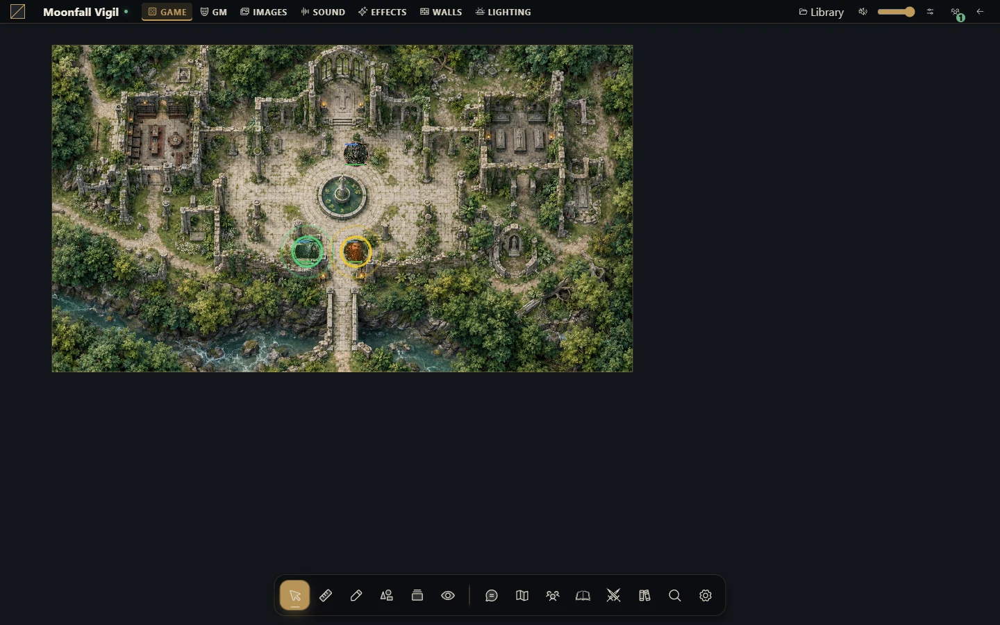

Import and export Universal VTT
Bring in a prepared map or transfer a native scene while understanding the format limits.


Choose the right interchange
Universal VTT imports .uvtt, .dd2vtt and .df2vtt files into a new native scene with supported image, grid, walls, doors and lights. Only a campaign GM may import/export. Imported scenes start GM-only and preserve the existing player broadcast. They do not become Map Builder projects.
For a PNG/JPEG/WebP/TIFF image you want to decorate in the Builder, use Import ready-made map instead. An image cannot reconstruct original walls or layers.
Import a scene
Choose Scenes → New scene → Import Universal VTT, starting inside the destination folder when appropriate.
Select the file and check the scene name, which must be 1–120 characters.
Choose Import scene and wait. Grid and lighting come from the file; this modal has no separate configuration for them.
Read the warnings after creation, then close the modal.
Inspect grid alignment, wall openings, door states and lighting before activating for players.
Portals become doors. Baked-in lighting may cause imported lights to start disabled. Ambient color, shadows and unsupported light features are approximated; inspect warnings rather than assuming an exact match.
Recover an uncertain import
Validation errors create no partial scene. If the connection fails, keep the modal open with the same file/name and choose Import scene again: it reuses the operation identity. Changing fields or reopening starts another operation. If you already closed/refreshed, check Scenes before importing again to avoid a duplicate.
Export the applied scene
First generate/update a Builder scene if your latest changes are still in its project. Right-click the native scene, choose Export Universal VTT, then Prepare export, inspect warnings and Download Universal VTT. The prepared download is a snapshot of that moment; reopen and prepare again after scene changes.
The background and supported visible images/surfaces are flattened into PNG. Walls, doors and enabled lights retain supported interchange data. Tokens, blueprints, variables, jobs, audio, cards, journals, particles, shaders and campaign state are not transferred. GM-only images are omitted, but secret-door geometry may remain; inspect before sharing.
Limits
The format uses numeric version 0.2, separate from the app version. The JSON limit is 64 MiB; embedded compressed image limit is 48 MiB; raster area is at most 16,777,216 pixels or a smaller host limit. Geometry allows 5,000 native objects and 20,000 line-of-sight vertices. Import accepts embedded single-frame PNG/WebP rather than remote image URLs. Excessive geometry or missing export tiles fails the operation instead of producing a partial download. Keep the original project and a proper installation backup.